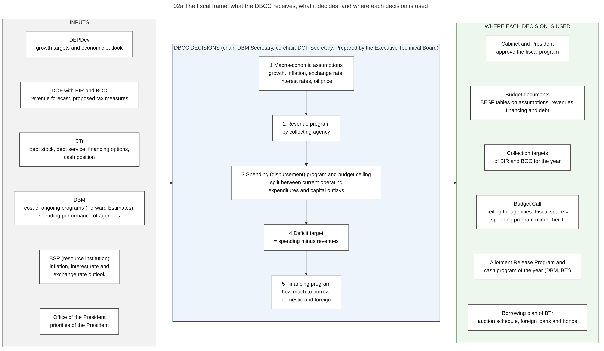

Diagram 02a · Mermaid flowchart
The fiscal frame: what the DBCC receives, what it decides, and where each decision is used
Question: Who decides the total size of the budget before any agency writes a proposal, from which inputs, and where does each decision go next?

What the diagram shows
- Question: who decides the total size of the budget before any agency writes a proposal, from which inputs, and where does each decision go next?
- How to read it: left = inputs and who gives them. Middle = the five decisions of the Development Budget Coordination Committee (DBCC). Right = the document or process that uses each decision.
- The rule that connects the decisions (an accounting identity): revenues minus disbursements = deficit. The deficit must be covered by net borrowing or by using cash balances.
- Sources: DBCC members, the Executive Technical Board and the functions (spending level and ceilings, split between current operating expenditures and capital outlays, reliability of revenue estimates, tax measures, borrowing level, recommendation to the Cabinet and the President) [DBCC-PAGE]. Tier 1, Forward Estimates and fiscal space [NBM156]. Allotment Release Program consistent with the DBCC fiscal program [NBC599]. Cash forecast by BTr [BTR-SITE].
- Chair: the DBM page names the DBM Secretary as chair [DBCC-PAGE]. Administrative Order No. 37 of 13 August 2025 designates the Secretary of Finance as co-chairperson [AO37].
- General knowledge, not opened in a source here: the list of macroeconomic assumptions, the Medium-Term Fiscal Framework, the reviews during the year.
Code

---
title: "02a The fiscal frame: what the DBCC receives, what it decides, and where each decision is used"
config:
flowchart:
wrappingWidth: 460
---
flowchart LR
%% QUESTION THIS DIAGRAM ANSWERS: who decides the total size of the budget before any agency writes a proposal, from which inputs, and where does each decision go next?
%% READING: left = inputs and who gives them. Middle = the five decisions of the Development Budget Coordination Committee (DBCC). Right = the document or process that uses each decision.
%% THE RULE THAT CONNECTS THE DECISIONS (an accounting identity): revenues minus disbursements = deficit. The deficit must be covered by net borrowing or by using cash balances.
%% SOURCES: DBCC members, the Executive Technical Board and the functions (spending level and ceilings, split between current operating expenditures and capital outlays, reliability of revenue estimates, tax measures, borrowing level, recommendation to the Cabinet and the President) [DBCC-PAGE]. Tier 1, Forward Estimates and fiscal space [NBM156]. Allotment Release Program consistent with the DBCC fiscal program [NBC599]. Cash forecast by BTr [BTR-SITE].
%% CHAIR: the DBM page names the DBM Secretary as chair [DBCC-PAGE]. Administrative Order No. 37 of 13 August 2025 designates the Secretary of Finance as co-chairperson [AO37].
%% GENERAL KNOWLEDGE, NOT OPENED IN A SOURCE HERE: the list of macroeconomic assumptions, the Medium-Term Fiscal Framework, the reviews during the year.
subgraph IN["INPUTS"]
direction TB
I1["DEPDev<br/>growth targets and economic outlook"]
I2["DOF with BIR and BOC<br/>revenue forecast, proposed tax measures"]
I3["BTr<br/>debt stock, debt service, financing options,<br/>cash position"]
I4["DBM<br/>cost of ongoing programs (Forward Estimates),<br/>spending performance of agencies"]
I5["BSP (resource institution)<br/>inflation, interest rate and<br/>exchange rate outlook"]
I6["Office of the President<br/>priorities of the President"]
I1 ~~~ I2
I2 ~~~ I3
I3 ~~~ I4
I4 ~~~ I5
I5 ~~~ I6
end
subgraph DB["DBCC DECISIONS (chair: DBM Secretary, co-chair: DOF Secretary. Prepared by the Executive Technical Board)"]
direction TB
D1["1 Macroeconomic assumptions<br/>growth, inflation, exchange rate,<br/>interest rates, oil price"]
D2["2 Revenue program<br/>by collecting agency"]
D3["3 Spending (disbursement) program and budget ceiling<br/>split between current operating<br/>expenditures and capital outlays"]
D4["4 Deficit target<br/>= spending minus revenues"]
D5["5 Financing program<br/>how much to borrow,<br/>domestic and foreign"]
D1 --> D2 --> D3 --> D4 --> D5
end
subgraph OUT["WHERE EACH DECISION IS USED"]
direction TB
O0["Cabinet and President<br/>approve the fiscal program"]
O1["Budget documents<br/>BESF tables on assumptions, revenues,<br/>financing and debt"]
O2["Collection targets<br/>of BIR and BOC for the year"]
O3["Budget Call<br/>ceiling for agencies. Fiscal space =<br/>spending program minus Tier 1"]
O4["Allotment Release Program and<br/>cash program of the year (DBM, BTr)"]
O5["Borrowing plan of BTr<br/>auction schedule, foreign loans and bonds"]
O0 ~~~ O1
O1 ~~~ O2
O2 ~~~ O3
O3 ~~~ O4
O4 ~~~ O5
end
IN --> DB
DB --> OUT
classDef default fill:#ffffff,stroke:#444444,color:#111
style IN fill:#f2f2f2,stroke:#555555
style DB fill:#eef4fb,stroke:#1f4e8c
style OUT fill:#edf7ed,stroke:#2e6b2e